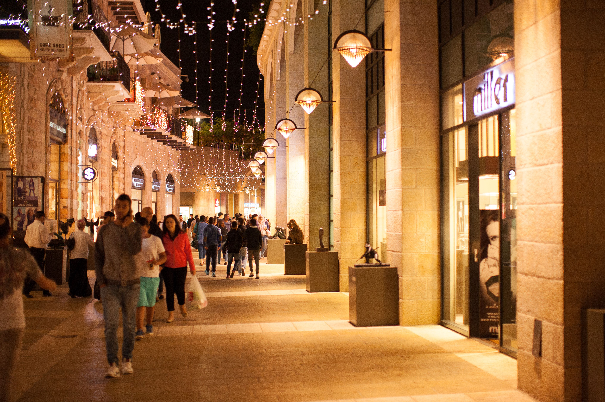

Solo suscriptores
Noche Siman
Tienda abierta hasta medianoche con 20% de descuento adicional sobre precios ya rebajados, música en vivo y regalos sorpresa.
- 📅 Fecha: Viernes 13 de noviembre
- 🕒 Hora: 6:00 p.m. – 12:00 a.m.
- 📍 Lugar: Todas las tiendas